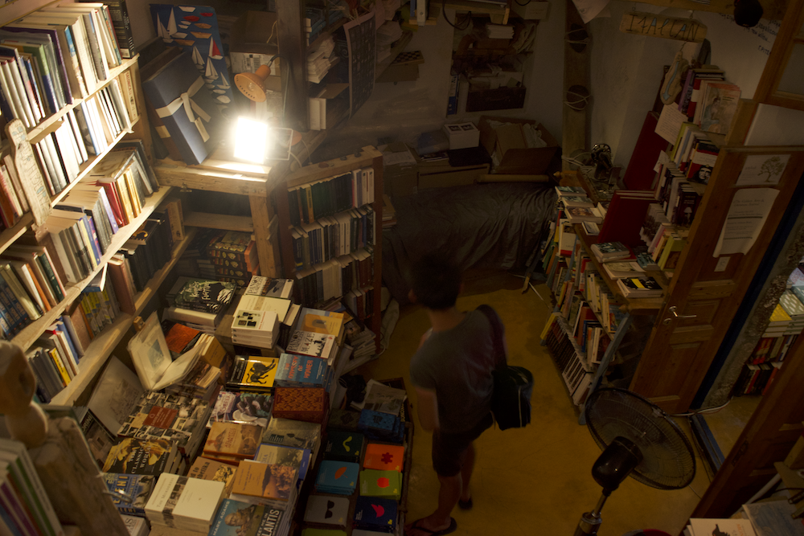
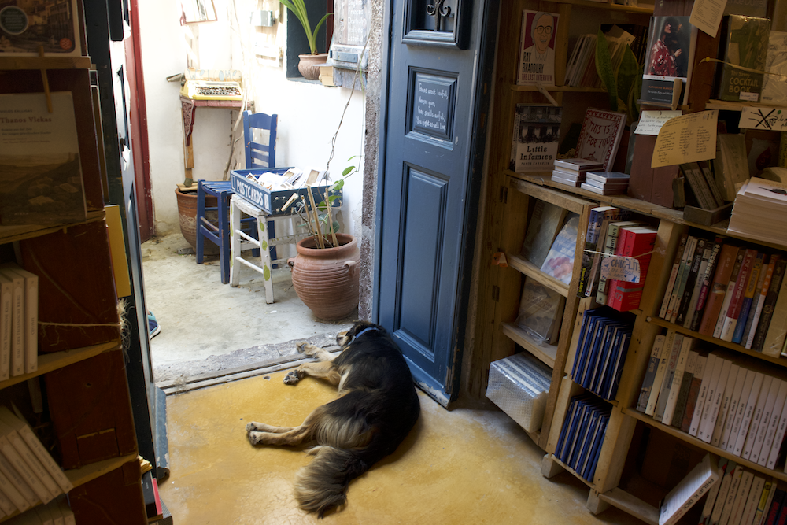
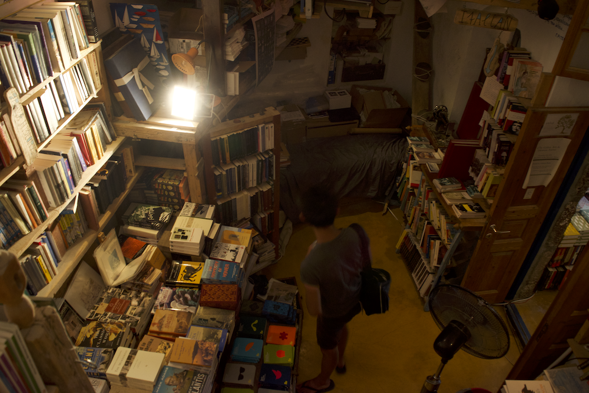
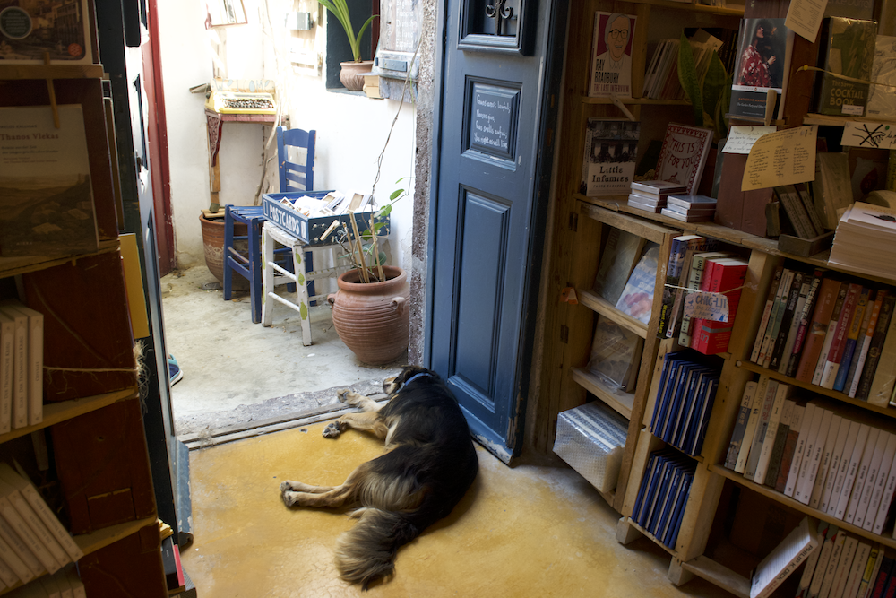

Atlantis Bookstore
📍Santorini, Greece
Situated on Santorini, Greece, Atlantis Bookstore is definitely one of the most special bookstores I have ever been to.
Address: Oia Santorini T.K. 84702 Kyklades Greece
Email: hello@atlantisbooks.org
Telephone:+30 22860 72346
Cited from the website: In the spring of 2002, Oliver and Craig spent a week on the island of Santorini. The land inspired them and there was no bookshop, so they drank some wine and decided to open one. Oliver named it Atlantis Books and the two laughed about how their children would run it someday.
Some images are extracted from http://atlantisbooks.org
Some others are photographed by me.
 


